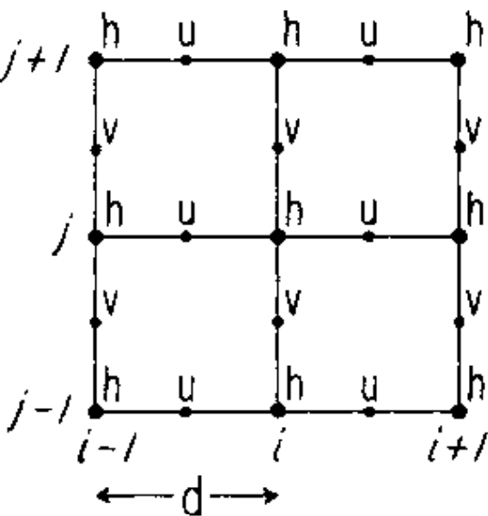
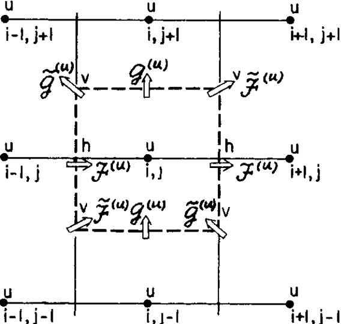

The basic algorithm employed for stepping forward the momentum equations is based on retaining non-divergence of the flow at all times. This is most naturally done if the components of flow are staggered in space in the form of an Arakawa C grid.


(1) Create a 2D geopotential field on a square domain using an Arakawa C-grid.
Initialize the height field with a localized positive perturbation at the center of the domain and zero elsewhere.
Use a uniform grid and second-order centered finite differences to compute the horizontal divergence of the velocity field,
and update the height field using the linearised shallow-water continuity equation.
Visualize this field at several time steps using functions such as matplotlib.pyplot.contourf or imshow.
(2) Initialize the horizontal velocity components on a staggered Arakawa C-grid. Write functions to update the zonal and meridional velocities using finite differences and Coriolis coupling. Use centered spatial derivatives for pressure gradients and appropriate averaging to interpolate velocities between grid points. Plot the velocity field using arrows or streamlines, and verify that the flow responds to the height perturbation.
(3) Integrate the linearised rotating shallow-water equations forward in time using an explicit time-stepping scheme. Compute and report the gravity-wave Courant number based on the chosen time step and grid spacing. Evolve the system for several time steps and create a visualization showing the coupled evolution of the height and velocity fields. Use sequential plots or an animation to illustrate wave propagation on the C-grid.
(4) Implement the linearised rotating shallow-water equations on an Arakawa A-grid or Arakawa B-grid using the same numerical parameters as in the C-grid case. Compare the solutions obtained with different grid staggers and discuss any differences.
1 This problem set contains 6 problems, and your final score will be based on the 4 problems on which you earned the highest scores.
2 A. Arakawa and V. Lamb. Computational design of the basic dynamical processes of the ucla general circulation model. Meth. Comput. Phys., 17:174–267, 1977.